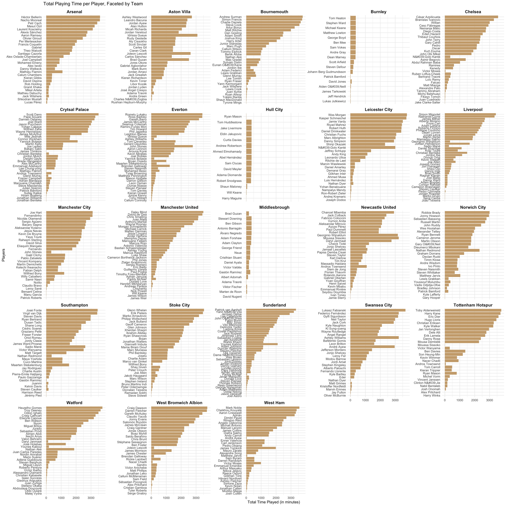
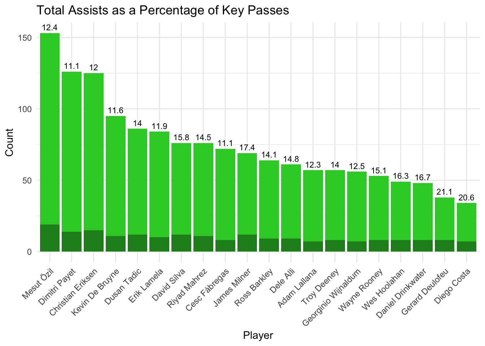
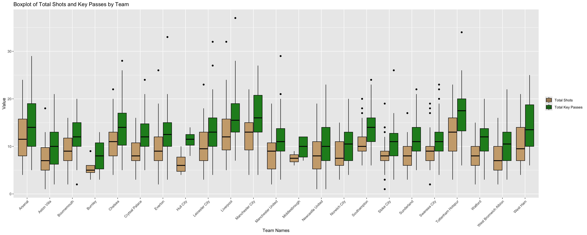
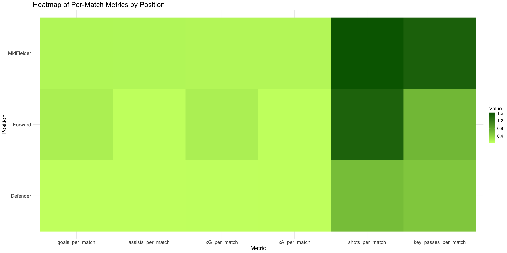

Code
library(ggplot2)
library(dplyr)
library(tidyverse)
player_df = read.csv("combined_match_players_0-500.csv")
player_df = na.omit(player_df)library(ggplot2)
library(dplyr)
library(tidyverse)
player_df = read.csv("combined_match_players_0-500.csv")
player_df = na.omit(player_df)This chart is used to analyse the total playing time for each player in their respective teams. We do this by plotting a horizontal bar chart for the minutes played by per match for each player faceted by team.
team_names <- c("71" = "Aston Villa", "72" = "Everton", "73" = "Bournemouth", "74" = "Southampton", "75" = "Leicester City", "76" = "West Bromwich Albion", "77" = "Sunderland","78" = "Crytsal Palace", "79" = "Norwich City", "80" = "Chelsea", "81" = "West Ham", "82" = "Tottenham Hotspur","83" = "Arsenal", "84" = "Swansea City", "85" = "Stoke City", "86" = "Newcastle United", "87" = "Liverpool","88" = "Manchester City", "89" = "Manchester United", "90" = "Watford", "91" = "Hull City", "92" = "Burnley", "93"="Middlesbrough")
player_df$team_name <- team_names[as.character(player_df$team_id)]
df_time_played_grouped <- player_df |>
group_by(team_name, player) |>
summarise(total_time_played = sum(time_played), .groups = "drop")
ggplot(df_time_played_grouped,
aes(x = total_time_played, y = reorder(player,total_time_played))) +
geom_bar(stat = "identity", fill = "burlywood3") +
facet_wrap(~team_name, scales = "free_y") +
labs(
title = "Total Playing Time per Player, Faceted by Team",
x = "Total Time Played (in minutes)",
y = "Players"
) +
theme_minimal() +
theme(strip.text = element_text(size = 12, face = "bold"))
The importance of a player to a team can be assessed based on the amount of playing time they accumulate. Generally, more important players tend to play more minutes compared to those with lesser roles (though this can be influenced by factors such as injuries). Therefore, by examining the bar graph, we can identify which players are crucial to each team. Players positioned at the top of the bar chart for each team are likely to be the most important.
This also allow us to assess which players may be overworked and could potentially benefit from more rest. By analyzing the amount of playing time, we can identify players who are being relied upon heavily, which may indicate a risk of fatigue or injury if not managed properly.
For example, Hector Bellerin stands out as one of Arsenal’s most crucial players, as he has accumulated the highest amount of playing time. This suggests that he is a key part of the team’s strategy and is likely being relied upon for consistent performance. Such insights help in understanding player dynamics and can guide decisions related to player rotation and rest to maintain peak performance throughout the season.
To analyse the total goals made by a player for their team against the goals that were expected, we plot a scatter plot with total goals by each player (on x-axis) and total expected goals (on y-axis). Additionally, the points have been colored to reflect the total shots made by the player.
library(viridis)
library(plotly)
total_goals <- player_df %>%
group_by(player, team_name) %>%
summarise(
total_xG = sum(xA),
total_goals = sum(goals),
total_shots = sum(shots)
)
scatter_plot <- ggplot(total_goals,
aes(x = total_xG, y = total_goals,
color = total_shots, text = player)) +
geom_point(alpha = 0.5) +
labs(
title = "Actual Goals vs Expected Goals for Forward Position Players",
x = "Expected Goals",
y = "Actual Goals",
size = "Total Shots"
) +
scale_color_viridis(name = 'Total Shots', option = "C", direction = -1) +
facet_wrap(~team_name) +
geom_abline(intercept = 0, slope = 1, color = "darkblue", linetype = "dashed", linewidth = 0.5) +
theme_minimal()
interactive_plot <- ggplotly(scatter_plot, tooltip = c("x", "y", "text", "color"))
interactive_plotExpected goals, is a crucial metric in football that quantifies the quality of scoring chances a team creates during a match. Since goals are the ultimate objective in football, every team aims to maximize both their expected goals and their actual goals. If a team has a high xG but a lower number of goals, it suggests they are not capitalizing on their chances effectively. Conversely, a low xG paired with a high number of goals may indicate efficient finishing.
The y = x line represents the line where expected goals are equal to the actual goals across all matches played, ideally every team would like their players to atleast be on this line or above it. Any points falling below the line indicates the actual goals made are lesser than the expected goals. From the graph, we observe that teams like Tottenham Hotspur and Leicester City often have points below the y = x line, reflecting fewer goals than expected. Teams can use these insights to improve their conversion rate. On the other hand, teams like Liverpool and West Ham frequently exceed the y = x line, demonstrating better utilization of their scoring opportunities.
Next we use a cleveland dot plot to analyse the expected performance against the actual performance of the top 20 players with the highest total assists.
total_assists <- player_df %>%
group_by(player) %>%
summarise(
total_xA = sum(xA),
total_assists = sum(assists),
total_key_pass = sum(key_passes)
) %>%
arrange(desc(total_assists))
top_20 <- head(total_assists, 20)
#print(top_10_assists)
ggplot(top_20,
aes(y = reorder(player, total_assists))) +
geom_point(aes(x = total_assists, color = "Actual Assists"),
size = 3) +
geom_point(aes(x = total_xA, color = "Expected Assists"),
size = 3) +
labs(
title = "Player Performance: Average Assists vs Expected Assists",
x = "Assists",
y = "Player"
) +
theme_minimal() +
scale_color_manual(values = c("Actual Assists" = "forestgreen", "Expected Assists" = "burlywood3"),
name = "Type") +
guides(color = guide_legend(title = "Type"))Most of the players with the highest assists in all the matches played exceeded their expected assists. Barring Riyah Mahrez and Cesc Fabregas every other player from this top 20 list has made more assists than was expected of them indicating they are reliable teammates. This information can be helpful when planning team strategies or even at the time of analysis of a rival team, you can ascertain which players in the rival team to keep the ball away from or which players to focus the defense on.
If we consider the first chart displaying the total minutes played by each player, 11 out of the 20 players with the highest assists (i.e. 11 out of the players on the cleveland chart) have been the top five players for their respective teams in terms of minutes played. Indicating they are indeed extremely important for the team, some of these players include Mesut Ozil, Dimitri Payet, James Milner, Adam Lallana etc. However this is not always the case, nearly 50% of these 20 players did not play many minutes on their teams yet they contributed in the short time they were on the field making them critical for game strategies.
An interesting observation is that Troy Deeney exactly as many assists as expected. Talk about a good prediction!
For the players with the highest assists lets analyse their conversation rate from key passes to assists
top_20 <- top_20 %>%
mutate(
percent_assists = (total_assists/total_key_pass)*100
)
ggplot(top_20, aes(x = reorder(player, -total_key_pass))) +
geom_bar(aes(y = total_key_pass), stat = "identity", fill = "limegreen") +
geom_bar(aes(y = total_assists), stat = "identity", fill = "forestgreen") +
labs(
title = "Total Assists as a Percentage of Key Passes",
x = "Player",
y = "Count"
) +
geom_text(aes(y = total_key_pass, label = round(percent_assists, 1)), vjust = -0.5, size = 3) +
theme_minimal() +
theme(
axis.text.x = element_text(angle = 45, hjust = 1)
)
df_team_match_grouped <- player_df |>
group_by(match_id,team_name) |>
summarise(
total_goals = sum(goals, na.rm = TRUE),
total_xG = sum(xG, na.rm = TRUE),
total_xA = sum(xA, na.rm = TRUE),
total_shots = sum(shots, na.rm = TRUE),
total_assists = sum(assists, na.rm = TRUE),
total_key_passes = sum(key_passes, na.rm = TRUE),
total_time_played = sum(time_played, na.rm=TRUE)
)
df_long_tm <- df_team_match_grouped %>%
pivot_longer(cols = c(total_shots, total_key_passes),
names_to = "metric",
values_to = "value")
ggplot(df_long_tm, aes(x = team_name, y = value, fill = metric)) +
geom_boxplot(position = position_dodge(0.8), color = "black") +
labs(title = "Boxplot of Total Shots and Key Passes by Team",
x = "Team Names",
y = "Value") +
scale_fill_manual(values = c("burlywood3", "forestgreen"),
labels = c("Total Shots", "Total Key Passes")) +
theme(axis.text.x = element_text(angle = 45, hjust = 1),
legend.title = element_blank())
From the combined boxplot, it is evident that Manchester City and Tottenham Hotspur consistently exhibit the highest medians for both total shots and total key passes, reflecting their strong offensive gameplay. In contrast, Burnley shows the lowest median for total shots, indicating their struggles in creating scoring opportunities. Additionally, the plot highlights the presence of outliers, showcasing matches where teams performed significantly above or below their typical range. The visualization also provides insights into the lower and upper quartiles, offering a clear understanding of the variability and distribution of performance metrics across different teams.
Understanding matches played at home and away form home for each team by plotting grouped bar charts depicting the expected goals and expected assists.
df_match_team_grouped <- player_df %>%
group_by(match_id, team_name, home_away) %>%
summarise(
total_goals = sum(goals, na.rm = TRUE),
total_assists = sum(assists, na.rm = TRUE),
total_xG = sum(xG, na.rm = TRUE),
total_xA = sum(xA, na.rm = TRUE),
total_key_passes = sum(key_passes, na.rm = TRUE),
total_shots = sum(shots, na.rm = TRUE)
)
df_team_grouped <- df_match_team_grouped %>%
group_by(team_name, home_away) %>%
summarise(
total_goals = sum(total_goals, na.rm = TRUE),
total_assists = sum(total_assists, na.rm = TRUE),
total_xG = sum(total_xG, na.rm = TRUE),
total_xA = sum(total_xA, na.rm = TRUE),
total_key_passes = sum(total_key_passes, na.rm = TRUE),
total_shots = sum(total_shots, na.rm = TRUE),
matches=n()
)
df_team_grouped <- df_team_grouped %>%
mutate(
goals_per_match = total_goals / matches,
assists_per_match = total_assists / matches,
xG_per_match = total_xG / matches,
xA_per_match = total_xA / matches,
key_passes_per_match = total_key_passes / matches,
shots_per_match = total_shots / matches
)
df_long <- df_team_grouped %>%
pivot_longer(cols = c(xG_per_match, xA_per_match), names_to = "metric", values_to = "value")
df_long <- df_team_grouped %>%
pivot_longer(cols = c("xG_per_match", "xA_per_match"),
names_to = "metric",
values_to = "value")
ggplot(df_long, aes(x = metric, y = value, fill = home_away)) +
geom_bar(stat = "identity", position = "dodge") +
facet_wrap(~ team_name) +
labs(
title = "Comparison of xG and xA for Teams in Home and Away Matches",
x = "Metrics",
y = "Values",
fill = "Home/Away"
) +
scale_fill_manual(values = c("a" = "yellow3", "h" = "green4")) + # Adjust colors for home/away
theme_minimal() +
theme(
plot.title = element_text(size = 20),
axis.title.x = element_text(size = 16),
axis.title.y = element_text(size = 16),
axis.text.x = element_text(size = 14),
axis.text.y = element_text(size = 14),
legend.title = element_text(size = 14),
legend.text = element_text(size = 12)
)
The above graph reveals a clear trend where most teams perform better at home than away, particularly in terms of xG (expected goals) per match. All teams, except Bournemouth, Hull City, Leicester City, Sunderland, and Swansea City, show higher xG per match when playing at home compared to away. A similar pattern is observed for xA (expected assists), further emphasizing the advantage of playing in a familiar home stadium. This trend suggests that the home atmosphere plays a significant role in a team’s performance. Teams with a higher xG and xA at home might benefit from the psychological and tactical advantages of playing in their own stadium. These statistics can be valuable for assessing a team’s overall strength, as well as identifying potential weaknesses or inconsistencies in their away form. By analyzing this data, coaches, analysts, and fans can better understand how home and away factors influence team performance throughout the season.
#install.packages("reshape2")
library(reshape2)
pos_match <- c("AMC" = "MidFielder","AML" = "MidFielder","AMR" = "MidFielder","MC" = "MidFielder","MR" = "MidFielder", "ML" = "MidFielder","DC" = "Defender","DL" = "Defender","DMC" = "Defender","DML" = "Defender","DMR" = "Defender","DR" = "Defender","FW" = "Forward","FWL" = "Forward","FWR" = "Forward","GK" = "Forward")
player_df$pos <- pos_match[as.character(player_df$position)]
df_position_grouped <- player_df |>
group_by(pos) |>
summarise(
total_goals = sum(goals, na.rm = TRUE),
total_xG = sum(xG, na.rm = TRUE),
total_xA = sum(xA, na.rm = TRUE),
total_shots = sum(shots, na.rm = TRUE),
total_assists = sum(assists, na.rm = TRUE),
total_key_passes = sum(key_passes, na.rm = TRUE),
total_time_played = sum(time_played, na.rm=TRUE)
)
df_position_grouped = na.omit(df_position_grouped)
df_position_grouped <- df_position_grouped |>
mutate(
goals_per_match = total_goals*90/total_time_played,
assists_per_match = total_assists*90/total_time_played,
xG_per_match = total_xG*90/total_time_played,
xA_per_match = total_xA*90/total_time_played,
shots_per_match = total_shots*90/total_time_played,
key_passes_per_match = total_key_passes*90/total_time_played
)
heatmap_data <- df_position_grouped |>
select(pos, goals_per_match, assists_per_match, xG_per_match, xA_per_match, shots_per_match, key_passes_per_match)
heatmap_matrix <- melt(heatmap_data, id.vars = "pos")
ggplot(heatmap_matrix, aes(x = variable, y = pos, fill = value)) +
geom_tile() +
scale_fill_gradient(low = "darkolivegreen1", high = "darkgreen") +
labs(
title = "Heatmap of Per-Match Metrics by Position",
x = "Metric",
y = "Position",
fill = "Value"
) +
theme_minimal() +
theme(
plot.title = element_text(size = 20),
axis.title.x = element_text(size = 16),
axis.title.y = element_text(size = 16),
axis.text.x = element_text(size = 14),
axis.text.y = element_text(size = 14),
legend.title = element_text(size = 14),
legend.text = element_text(size = 12)
)
From the graph, we can observe that midfielders generally have the highest values for assists_per_match, xA_per_match, shots_per_match, and key_passes_per_match. Forwards tend to have slightly higher goals_per_match and xG_per_match compared to midfielders. Defenders contribute the least across these metrics when compared to midfielders and forwards. An interesting insight is that midfielders have higher shots_per_match than forwards, which is somewhat unexpected.
card_summary <- player_df |>
group_by(player) |>
summarize(total_yellow = sum(yellow_card, na.rm = TRUE),
total_red = sum(red_card, na.rm = TRUE)) |>
arrange(desc(total_yellow)) |>
head(50)
mean_yellow <- mean(card_summary$total_yellow)
mean_red <- mean(card_summary$total_red)
card_chart <- ggplot(card_summary, aes(y = reorder(player, (total_yellow)))) +
geom_bar(aes(x = total_yellow), stat = "identity", fill = "lightgoldenrod") +
geom_bar(aes(x = total_red), stat = "identity", position = 'stack', fill = "indianred") +
labs(title = "Players with the Most Yellow and Red Cards", y = "Player", x = "Yellow Cards") +
theme_minimal()
print(card_chart)Here we examined the disciplinary records of football players based on their yellow and red cards, focusing on the top 50 players with the most number cards. We can identify players who have accumulated the highest number of yellow and red cards, potentially indicating a more aggressive playing style or a higher frequency of fouls during games.We can observe that 11 are most number of yellow cards obtained by 4 players in all the matches present in our data, and no player receives more than one red card indicating the serevirty of recieving a red card.
Mark Noble and James Milner are two players with a red card and the highest number of yellow cards. This distribution is right skewed as we ordered the data in descending order and there exists many people players who do not receive a foul card during their play.
Here each team’s performance has been analysed by assessing how well the team capatilized on their expected goals against the respective opposition’s expected goals. To do this we first created a new dataset by matching the teams with their opponents (as they would share the same match_id).
df_with_lag <- df_team_match_grouped |>
group_by(match_id) |>
mutate(across(total_goals:total_time_played, ~lag(.x), .names = "opposition_{.col}")) |>
ungroup()
df_with_lead <- df_team_match_grouped |>
group_by(match_id) |>
mutate(across(total_goals:total_time_played, ~lead(.x), .names = "opposition_{.col}")) |>
ungroup()
df_with_lag = na.omit(df_with_lag)
df_with_lead = na.omit(df_with_lead)
df_combined = rbind(df_with_lag, df_with_lead)
df_combined <- df_combined |>
mutate(result = case_when(
total_goals > opposition_total_goals ~ "win",
total_goals == opposition_total_goals ~ "tie",
total_goals < opposition_total_goals ~ "loss"
))
ggplot(df_combined, aes(x = opposition_total_xG, y = total_xG, color = factor(result))) +
geom_point() +
facet_wrap(~team_name) +
labs(title = "Expected Goals vs Opposition's Expected Goals by Team",
x = "Opposition xG",
y = "xG",
COLOR = "result") +
geom_abline(intercept = 0, slope = 1, color = "darkblue", linetype = "dashed", linewidth = 0.5) +
theme_minimal() +
scale_color_manual(values = c("loss" = "indianred2", "tie" = "yellow3", "win" = "forestgreen")) +
theme(
plot.title = element_text(size = 20),
axis.title.x = element_text(size = 16),
axis.title.y = element_text(size = 16),
axis.text.x = element_text(size = 14),
axis.text.y = element_text(size = 14),
legend.title = element_text(size = 14),
legend.text = element_text(size = 12)
)The scatter plot reflects the following: points lying above the line y = x (where xG are greater than the opposition’s xG) should be green, indicating a win for the team. Points on the line y = x (where the xG scored by both teams are equal) should be yellow, reflecting a draw. Points below the line y = x (where the opposition has more xG) should be red, representing a loss.
Any deviation from this expected trend suggests that either the team or the opposition failed to capitalize on scoring opportunities. For example, a red point above the line y = x indicates that despite having more scoring chances (more xG), the team lost the match. This might reflect missed opportunities or an inability to convert chances effectively.
On the other hand, a green point above the line y = x indicates strong performance, where the team not only had more scoring chances but also capitalized on them effectively, leading to a win. Teams like Arsenal, Leicester City, and Tottenham Hotspur, which have numerous green points above y = x , demonstrate good performance by converting their opportunities into victories.
Conversely, teams like Aston Villa and Norwich City show a different trend, with more red points below the line y = x . This suggests that although they might have had opportunities, they either failed to capitalize on them or could not prevent the opposition from scoring, resulting in a poor performance. Such teams may need to focus on improving both their attacking efficiency and defensive resilience.
df_combined <- df_combined |>
mutate(points = case_when(
total_goals > opposition_total_goals ~ 3,
total_goals == opposition_total_goals ~ 1,
total_goals < opposition_total_goals ~ 0
))
df_team_grouped <- df_combined |>
group_by(team_name) |>
summarise(
avg_goals = mean(total_goals, na.rm = TRUE),
avg_xG = mean(total_xG, na.rm = TRUE),
avg_xA = mean(total_xA, na.rm = TRUE),
avg_shots = mean(total_shots, na.rm = TRUE),
avg_assists = mean(total_assists, na.rm = TRUE),
avg_key_passes = mean(total_key_passes, na.rm = TRUE),
avg_points = mean(points,na.rm=TRUE),
.groups = "drop"
)
library(parcoords)
parcoords(df_team_grouped,
rownames = FALSE,
reorderable = TRUE,
brushMode = TRUE)This parallel coordinates plot explores the patterns between teams and their average performance metrics, such as, average goals, assists, expected goals, expected assists, shots and key passes.
We can observe that teams that score more goals (located higher on the avg_goals axis) often appear higher on the avg_xG axis as well, suggesting a strong correlation between a team’s actual scoring output and the quality of their chances. Higher-scoring and higher-xG teams often rank near the top on avg_shots, indicating that goal and xG performance tends to align with shooting frequency. In other words, the more shots the team attempt, the better chances they have to score a goal.
The similar trend can be observed among teams that do well in terms of assists (avg_assists) and key passes (avg_key_passes), as they typically align with higher xG and goals. Some lines show teams whose expected numbers (xG, xA) are decent, but their actual goals or assists are relatively lower. This mismatch may indicate inefficiencies in finishing or an inability to translate creative build-up into final outputs. Conversely, a few teams might outperform their expected numbers, suggesting clinical finishing or overperformance relative to their underlying metrics.
Teams located in the upper region of the parallel coordinates plot are performing better than those in the lower region. For example, Burnley and Aston Villa appear to be struggling, as they are positioned much lower compared to the other teams. On the other hand, teams like Arsenal, Liverpool, and Leicester City are performing well, as they are placed higher on the plot. Overall, the graph hints at strong interdependencies where higher goals/ assists positively correlates with xG, xA and shots, key passes.
df_team_grouped$team_name <- factor(df_team_grouped$team_name,
levels = df_team_grouped$team_name[order(df_team_grouped$avg_points)])
# Plot the dot plot
ggplot(df_team_grouped, aes(x = avg_points, y = team_name)) +
geom_point(size = 3, color = "forestgreen") +
labs(title = "Average Points by Team",
x = "Average Points",
y = "Team") +
theme_minimal()This dot plot visualizes the average points earned by each football team, where points are awarded as follows: 3 points for a win, 1 point for a draw, and 0 points for a loss. The data provides a clear insight into the performance of each team over the course of a season, highlighting the competitiveness across different positions in the league table.
From the chart, we can immediately observe that Leicester City stands out as the most successful team, with an impressive average of 2 points per game. This suggests that Leicester City has consistently performed well, achieving a balanced mix of wins and draws, which is a strong indicator of their competitiveness and ability to maintain good form over time. Achieving 2 points per game is typically a hallmark of top teams in any league, putting Leicester City in an elite position relative to the others.
On the other hand, Aston Villa appears at the bottom of the chart, with an average of less than 0.5 points per game. This places them among the least successful teams, indicating that Aston Villa struggles to accumulate points, likely due to a higher frequency of losses and fewer draws or wins. This could point to areas in need of improvement, such as squad depth, tactics, or overall team performance.